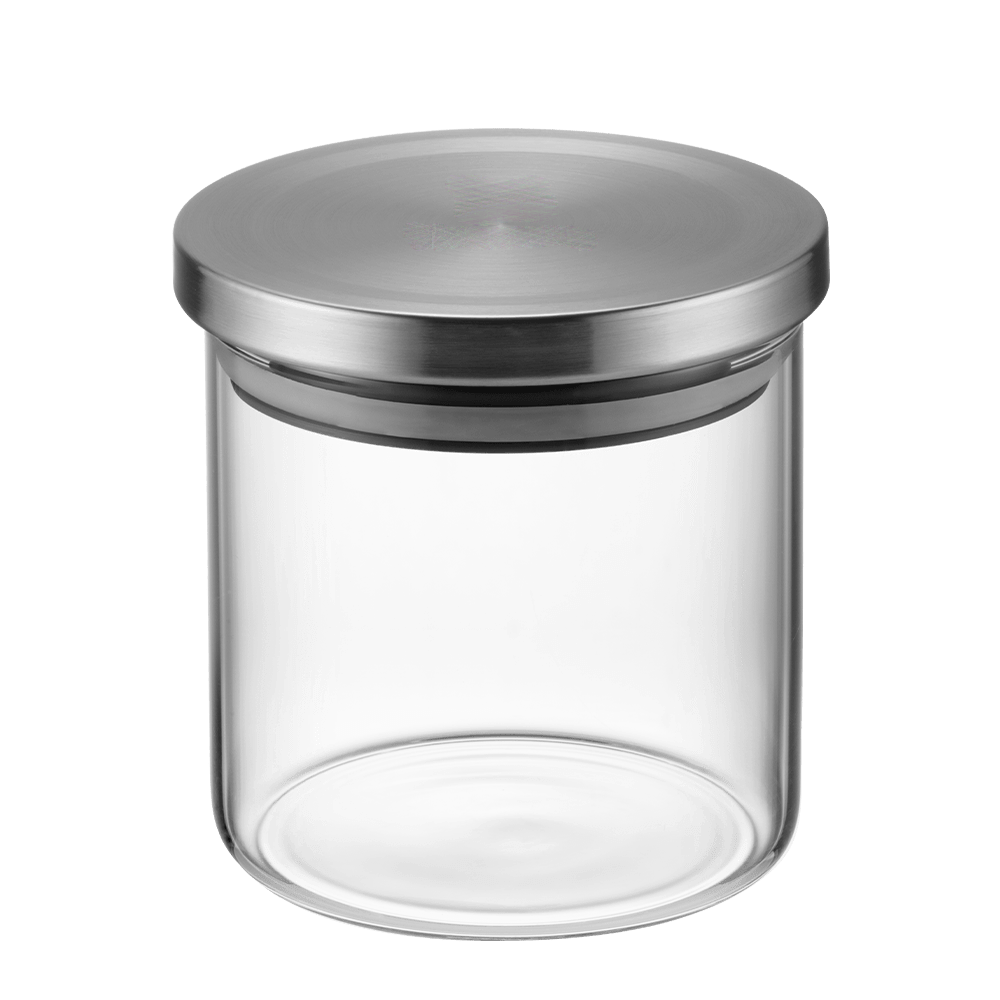
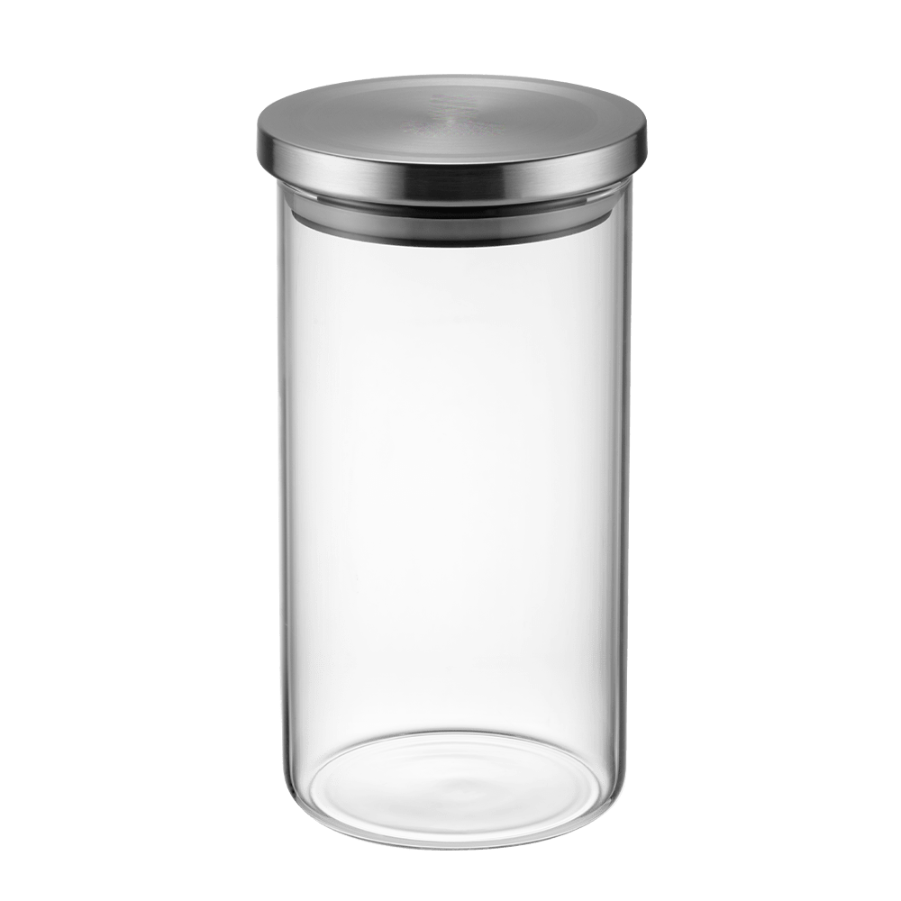
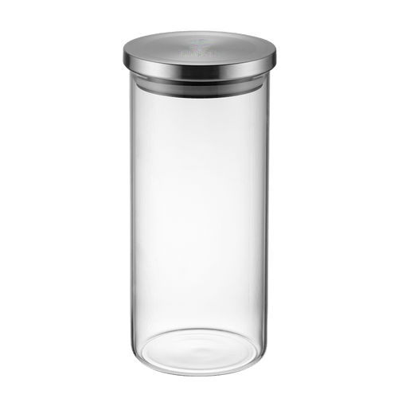
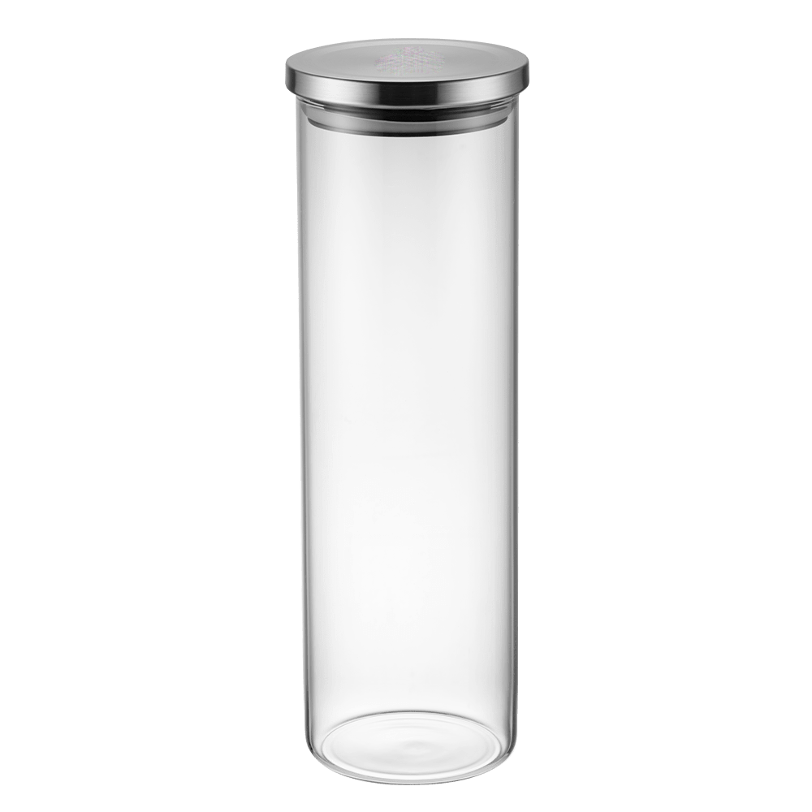

São ideais para armazenar os cafés com praticidade e segurança pois são livres de BPA. O fechamento hermético mantém o café frescos até a ultima dose. R$25
Jarro 0.25L

São ideais para armazenar os cafés com praticidade e segurança pois são livres de BPA. O fechamento hermético mantém o café frescos até a ultima dose. R$40
Jarro 0.5L

São ideais para armazenar os cafés com praticidade e segurança pois são livres de BPA. O fechamento hermético mantém o café frescos até a ultima dose. R$60
Jarro 1L

São ideais para armazenar os cafés com praticidade e segurança pois são livres de BPA. O fechamento hermético mantém o café frescos até a ultima dose. R$90